时段汇总统计
时段汇总
2,456.8
今日总能耗 (kWh)
16,892.3
本周累计 (kWh)
68,932.5
本月累计 (kWh)
198,456.2
本年累计 (kWh)
月度能耗对比
24小时能耗趋势
星期能耗分布
月度能耗趋势
各仪表类型月度使用量对比
短期能耗预测
夏季能耗预测
夏季能耗预测模型 1
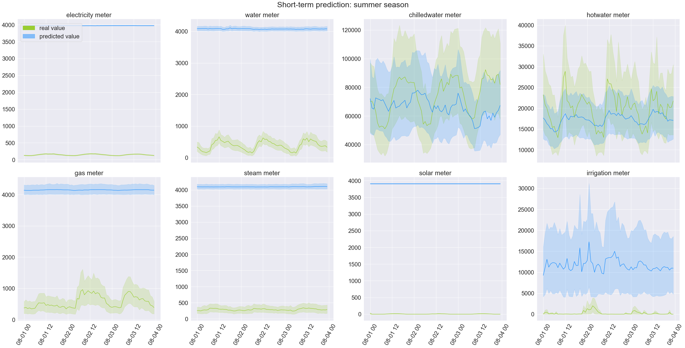
夏季能耗预测模型 2
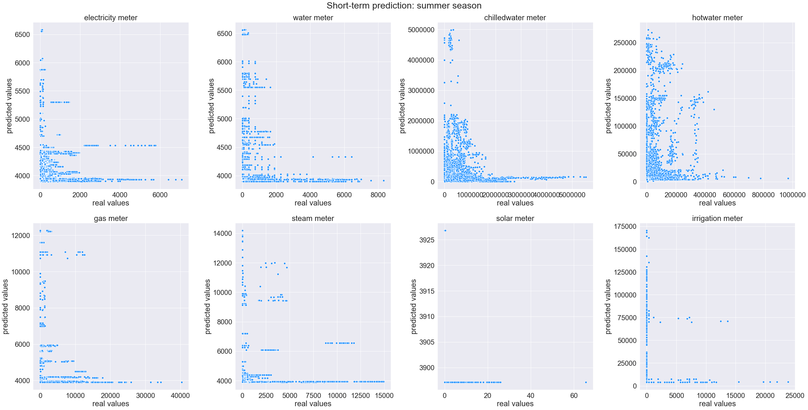
冬季能耗预测
冬季能耗预测模型 1
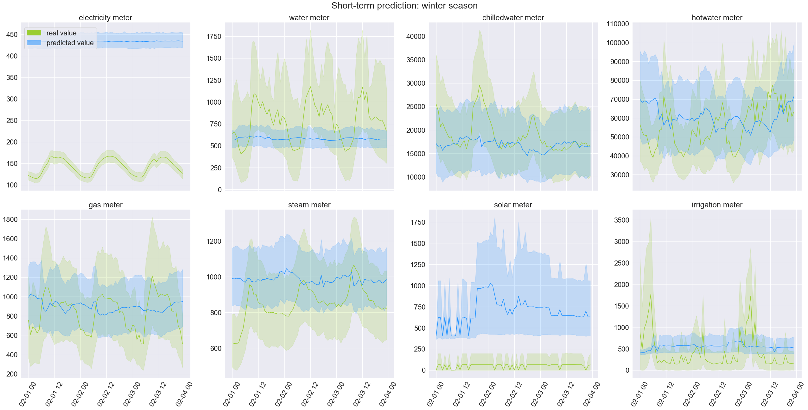
冬季能耗预测模型 2
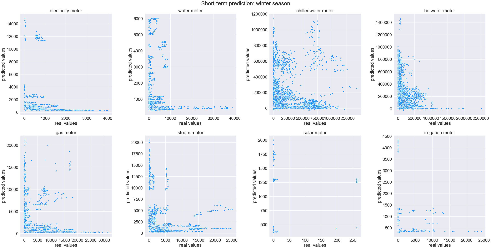
按星期能耗使用分析
星期能耗使用分布（一）
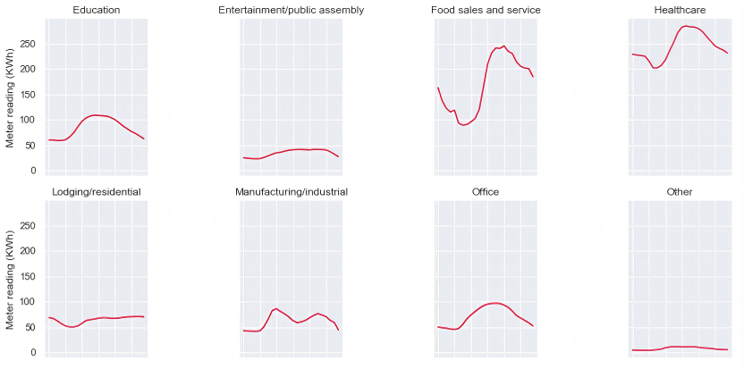
星期能耗使用分布（二）
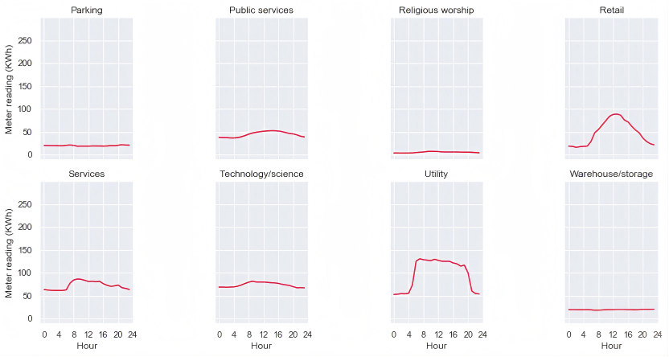
仪表数据详细分析
能耗数据直方图分布
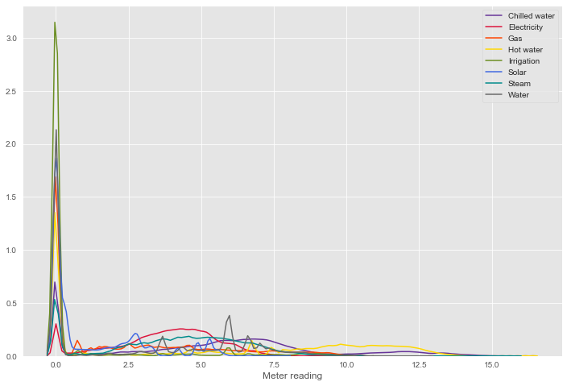
24小时仪表能耗分布
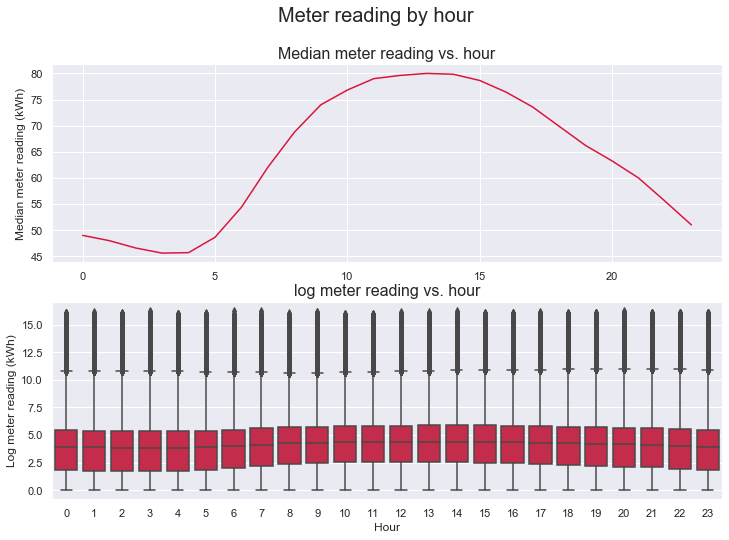
分仪表类型小时能耗对比
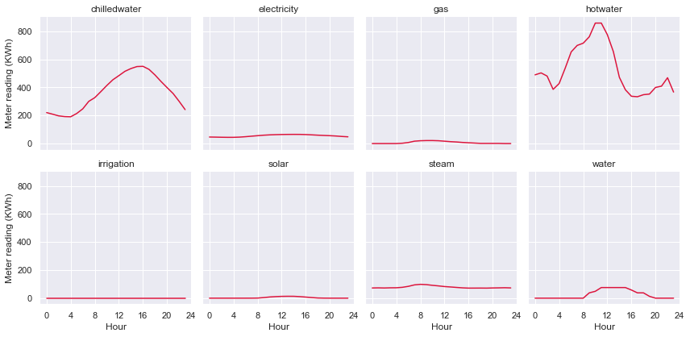
星期能耗统计概览
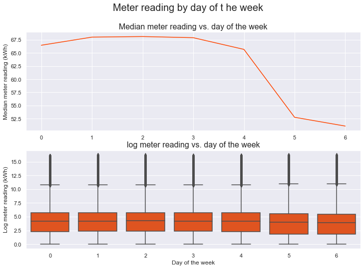
能耗预测模型分解
短期预测模型数据分解
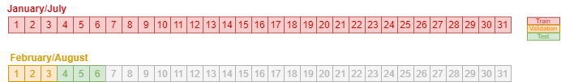